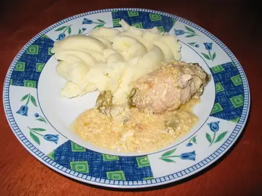

Что приготовить из грибов
Шампиньоны и лесные грибы: супы, жаркое, паста. 7 рецептов: у каждого время, калории и БЖУ на порцию, пошаговые инструкции и список покупок
 Паста с грибами в сливках30 мин · 602 ккал · Б 17 г · Второе блюдо
Паста с грибами в сливках30 мин · 602 ккал · Б 17 г · Второе блюдо Фаршированные шампиньоны в духовке40 мин · 192 ккал · Б 13 г · Закуска
Фаршированные шампиньоны в духовке40 мин · 192 ккал · Б 13 г · Закуска Ризотто с грибами40 мин · 589 ккал · Б 17 г · Второе блюдо
Ризотто с грибами40 мин · 589 ккал · Б 17 г · Второе блюдо Гречка по-купечески постная с грибами45 мин · 386 ккал · Б 14 г · Второе блюдо
Гречка по-купечески постная с грибами45 мин · 386 ккал · Б 14 г · Второе блюдо
Зразы из вчерашнего пюре с грибами45 мин · 377 ккал · Б 10 г · Второе блюдо Картофельное рагу с грибами60 мин · 315 ккал · Б 10 г · Второе блюдо
Картофельное рагу с грибами60 мин · 315 ккал · Б 10 г · Второе блюдо- Гречка с грибами и луком35 мин · 332 ккал · Б 13 г · Второе блюдо
Другие подборки
- Что приготовить из курицы
- Что приготовить из фарша
- Что приготовить из мяса
- Что приготовить из рыбы
- Что приготовить из картошки
- Что приготовить из яиц
- Что приготовить из творога
- Что приготовить из кабачков
- Что приготовить из капусты
- Что приготовить из риса
- Что приготовить из макарон
- Что приготовить из гречки
- Быстрый ужин за 30 минут
- Быстрый завтрак за 20 минут
- Что приготовить на скорую руку
- ПП-рецепты: лёгкие блюда до 400 ккал
- Белковые блюда: от 25 г белка на порцию
- Дешёвые рецепты из простых продуктов
- Что приготовить ребёнку
- Постные блюда
- Блюда на пару
- Что приготовить в духовке
- Простые супы
- Простые салаты
- Выпечка и десерты
- Блюда на праздничный стол
- Что приготовить из остатков